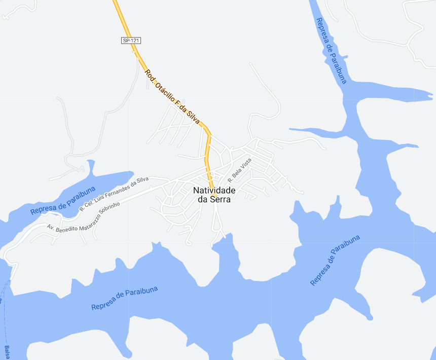
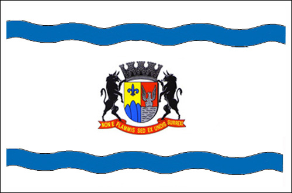

Natividade da Serra - Geodex


Município de Natividade da Serra
-
Populacão: 6.624 pessoas
-
Área: 833,372km²
-
Fundação: 1° de Maio de 1881
-
Distância da Capital: 167km
Natividade da Serra é uma pequena cidade localizada no estado de São Paulo, Brasil. Situada em uma região montanhosa e cercada por belas paisagens naturais, a cidade é conhecida por sua tranquilidade e contato com a natureza. Com uma população acolhedora, Natividade da Serra preserva suas tradições e cultura local. A agricultura e o turismo são importantes atividades econômicas na região, atraindo visitantes em busca de aventuras ao ar livre, trilhas e cachoeiras. A cidade oferece aos seus moradores e turistas uma atmosfera pacífica e um refúgio ideal para aqueles que desejam se conectar com a natureza.